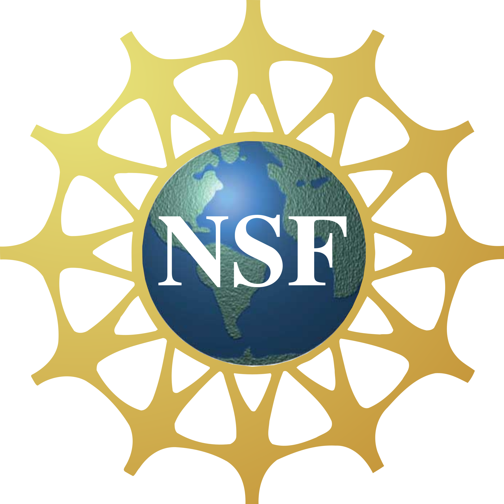

Ocean Hack Week 2023
Created by Anand Sekar
About OHW
What is OHW?
5 days of
- Exploring the computation of oceanographic data
- Inclusive community building of oceanographers
- Tutorials
- Collaborative projects
Sponsors

Organizers
Schedule
The virtual schedule is the same, but cuts off when lunch begins (1200).Tutorials
Project Ideation
- Monday: Brainstorming in breakout rooms
- Tuesday: Publishing ideas on Jamboard
- Wednesday: Presenting elevator pitch slides
Projects
- Oil spill monitoring: segmentation of satellite imagery
- Marine Species Distribution Model (SDM) Tutorial
- Inertial oscillations in the marginal ice zone
- Machine learning for Argo Data QC
- Benthic habitat mapping (image processing/seabed classification)
- Mooring processing and data page
- SST spatial distribution prediction using machine learning
Oil spill Monitoring: Segmentation of Satellite Imagery
Python notebooks which crop a SAR (Synthetic Aperture Radar) image of a possible oil slick and tries to determine - using simple image statistics - if it's an actual oil spill or a look-alike.Github | Presentation recording
Marine Species Distribution Model (SDM) Tutorial
A tutorial website to provide a simple workflow for developing a marine Species Distribution Model (SDM) using R programming.Github | Presentation recording
Project Website
Inertial oscillations in the marginal ice zone
Python notebooks which load high-resolution satellite images of the Beaufort Sea during a storm - to potentially track ice floes and ocean currents.Github | Presentation recording
Machine learning for Argo Data QC
Python notebooks which classify one year of temperature and salinity from floats in the North Atlantic for quality control.Github | Presentation recording
Benthic habitat mapping (image processing/seabed classification)
A Python notebook adaptation of a benthic habitat mapping workflow on ArcGIS; uses ML to classify seabed composition.Github | Presentation recording
Mooring processing and data page
A website for displaying and downloading mooring data (such as temperature, salinity, oxygen, etc.) from the Vancouver Island and Puget Sound region, with well-documented code and interactive visualizations.Github | Presentation recording
Project Website
SST spatial distribution prediction using machine learning
A set of deep learning models which, given 5 days of ERA5 and MUR NASA satellite data, predict the sea surface temperature of the next day.Github | Presentation recording
Takeaways
- Distributing work in a large group with little time is difficult, especially across time zones and language barriers
- Acquiring satellite data is challenging; so is processing it
- There are many tools which strive to do the same thing
- Data science hackathons are very different from other kinds (neurotech, app/ front-end software, hardware)